Results and Analysis
Overview of Findings
What makes this finding analytically interesting is that both groups were working from the same pool of evidence. This was not two independent observers reaching different conclusions. It was two groups with opposing agendas selectively extracting from a shared record.
The most analytically robust finding is not just that both groups cherry-picked, it is that both groups cherry-picked from the same evidence pool and reached opposite conclusions. This is only possible through coordinated, opposing acts of omission: FILAH suppressing every strong pro-fishing voice (Teddy Goldstein, Ed Helpsford, Tante Titan), TROUT suppressing every strong pro-tourism voice (Simone Kat, Carol Limpet, Tante Titan), both working from the journalist’s complete record and extracting only what served their respective narratives. The journalist’s dataset does not tell a dramatically different story from either partial view, it tells a balanced story that neither partial view was designed to permit.
Q1: Do FILAH’s and TROUT’s own datasets support their accusations?
What each group’s data shows
When analysed in isolation, both datasets appear to support their respective accusations:
- FILAH’s data shows board members engaging with Tourism topics at a mean sentiment of 0.740 versus Fishing topics at only 0.209. This appears to validate FILAH’s claim that the board is biased toward tourism.
- TROUT’s data shows the exact inverse: Fishing sentiment of 0.720 versus Tourism sentiment of only 0.141. This appears to validate TROUT’s claim of pro-fishing bias.
These are not small differences. They look like compelling evidence.
Figure Q1.1 — Sentiment Overview Dashboard
1. Sentiment bar chart trellis comparing mean sentiment by industry across FILAH (Fishing=0.209, Tourism=0.740), Journalist (Fishing=0.490, Tourism=0.549), and TROUT (Fishing=0.720, Tourism=0.141)
2. Topic coverage heatmap for mentions per topic across all three datasets;
3. Accusations vs Reality chart comparing each group’s claimed sentiment against the full journalist baseline.
If the interactive embed doesn’t load, open it directly on Tableau Public: Bias or Perception (Tableau Public).
View static screenshots
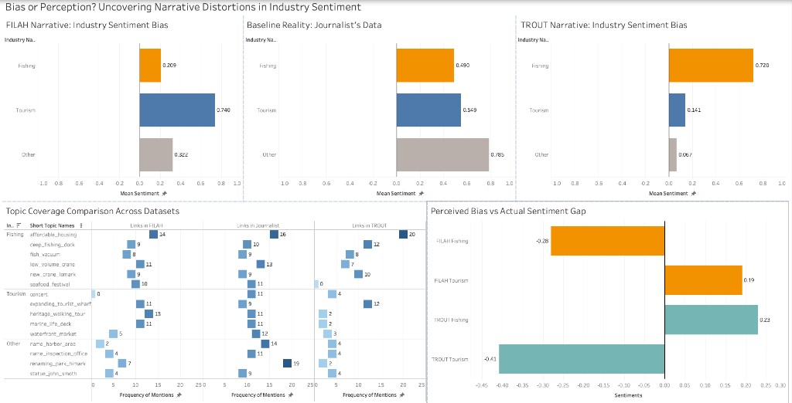
This dashboard places all three datasets side by side, making the distortions immediately visible by comparing FILAH’s and TROUT’s self-serving narratives against the journalist’s baseline reality.
FILAH Narrative: Industry Sentiment Bias
A horizontal bar chart showing mean sentiment by industry using only FILAH’s data. Fishing sits at 0.209 and Tourism at 0.740: a gap of over 0.5 sentiment points that appears to validate FILAH’s pro-tourism bias claim. The chart has no negative bars, meaning FILAH’s curated records show universally positive board sentiment. The extreme disproportion between the two industry bars is a red flag.
Baseline Reality: Journalist’s Data
The same bar chart format applied to the full journalist dataset. Fishing sits at 0.490 and Tourism at 0.549: a difference of less than 0.06 across the full −1 to +1 scale. The two bars are nearly equal in length. This is the ground truth that both activist groups were working from and chose to distort.
TROUT Narrative: Industry Sentiment Bias
TROUT’s version of the same chart produces the mirror image of FILAH’s. Fishing now dominates at 0.720 while Tourism is compressed to 0.141. The chart is the visual inverse of FILAH’s, which is precisely what you would expect if both groups cherry-picked from the same underlying pool of records.
The heatmap evidence
The topic coverage heatmap reveals the mechanism behind the distortion. Two topics stand out:
- FILAH recorded zero links for
concert: a Tourism topic, while accusing the board of pro-tourism bias. - TROUT recorded zero links for
seafood_festival: a Fishing topic, while accusing the board of pro-fishing bias.
Both absences occur at precisely the topic most damaging to each group’s respective argument. This pattern is consistent with deliberate editorial selection rather than incomplete data collection, and we treat it as a strong analytical indicator of intentional omission — though, as noted in the Limitations section, we cannot establish this with certainty from the data alone.
The accusations vs reality
Comparing each group’s claimed sentiment values against the full journalist baseline makes the overstatement measurable:
| Claimed | Reality | Gap | |
|---|---|---|---|
| FILAH Tourism | 0.74 | 0.55 | +0.19 |
| FILAH Fishing | 0.21 | 0.49 | −0.28 |
| TROUT Fishing | 0.72 | 0.49 | +0.23 |
| TROUT Tourism | 0.14 | 0.55 | −0.41 |
TROUT’s tourism understatement of −0.41 is the largest single distortion in the comparison and the primary mechanism behind their pro-fishing bias claim.
Q2: Is the COOTEFOO board actually biased?
Board-wide sentiment
Using the complete journalist dataset across all 6 members:
Fishing
Mean sentiment = 0.490
33 positive / 6 negative interactions (participant links only; counts exclude non-participant roles)
Tourism
Mean sentiment = 0.549
58 positive / 6 negative interactions
A difference of 0.059 across a −1 to +1 scale does not constitute meaningful bias. Both industries receive positive engagement.
The interactive dashboard below uses the full journalist dataset. It includes Board Sentiment Direction (positive vs negative interactions by industry), member participation by industry, the FILAH / Journalist / TROUT sentiment trellis (the Journalist dataset sits between the two partisan extremes), member vs board average bars, and the member × topic sentiment heatmap.
Figure Q2.1 — Inside the Board: Member Contributions and Sentiment Patterns (interactive). Board Sentiment Direction; member participation stacked bars; partisan trellis; member vs board average; member × topic heatmap.
If the interactive embed doesn’t load, open it directly on Tableau Public: Inside the Board (Tableau Public).
View static screenshots
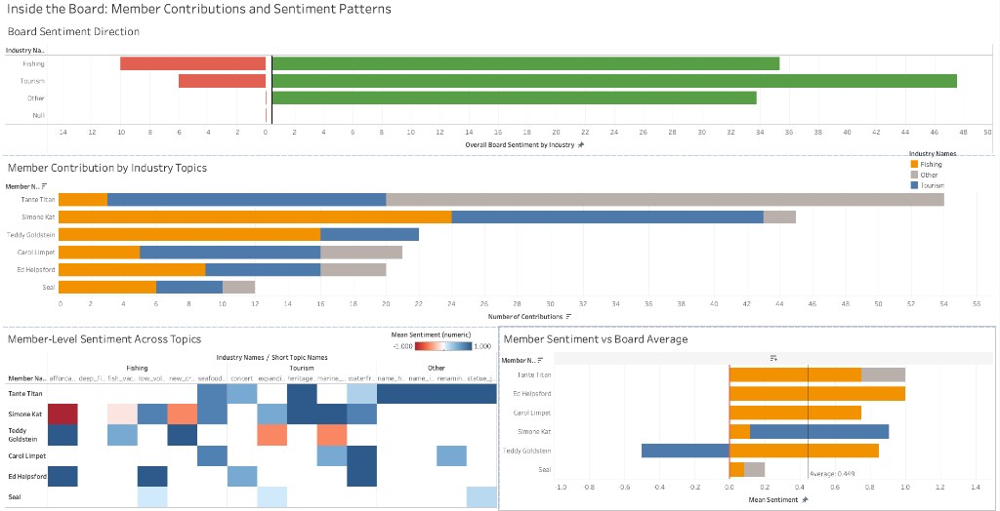
Inside the Board: Member Contributions and Sentiment Patterns
This dashboard uses the full journalist dataset to examine what the board actually does, how members distribute their participation across industries and whether sentiment patterns suggest any systematic lean.
Board Sentiment Direction
A diverging bar chart showing the net count of positive versus negative board interactions by industry, using the full journalist dataset. Green bars extend right (positive interactions), red bars extend left (negative interactions). Fishing shows roughly 33 positive against 6 negative (participant links); Tourism shows roughly 45 positive against 6 negative; Other shows a similar positive-dominant profile. The green bars dominate across all three industry categories — the board as a whole engages positively with both Fishing and Tourism, with no meaningful directional imbalance.
Member Contribution by Industry Topics
A stacked horizontal bar chart showing each member’s total participation link count, broken down by industry (Fishing = orange, Tourism = blue, Other = grey). Members are sorted by total contribution count. Tante Titan and Simone Kat are the two highest contributors overall. Teddy Goldstein’s bar is exclusively Fishing, a visually distinctive profile explained by his TROUT-only presence. Seal has the lowest total count across all members.
Member-Level Sentiment Across Topics
A heatmap with members as rows and individual topics as columns, grouped by industry. Cell colour encodes mean sentiment on a red (−1) to blue (+1) scale. The blank cells indicate a member has no recorded participation in that topic under the current dataset view.
Member Sentiment vs Board Average
A horizontal bar chart showing each member’s mean sentiment per industry (Fishing = orange, Tourism = blue, Other = grey), plotted against a vertical reference line marking the board-wide average. The most notable departure is Teddy Goldstein’s tourism bar, which extends left to −0.50 — the only negative industry-level value on the entire chart. The individual variation is real, but it is variation between members, not a board-level lean. The vertical reference line in Tableau reflects that workbook’s aggregation (it can read near 0.43 in the viz); it is not the same as a flat mean across every participant-link sentiment row in the raw CSVs (≈0.597) or a simple mean of each member’s per-industry means (≈0.62). Use the line as the dashboard’s board-wide benchmark, not as an unweighted CSV summary statistic.
Member-level variation exists
Individual members do show different industry orientations:
| Member | Fishing sentiment | Tourism sentiment | Profile |
|---|---|---|---|
| Tante Titan | 0.75 | 0.47 | Broadly positive across both |
| Ed Helpsford | 1.00 | 0.71 | Fishing-positive, tourism-positive |
| Carol Limpet | 0.75† | 0.68 | Tourism-leaning; fishing via seafood_festival |
| Simone Kat | 0.38‡ | 0.91 | Strongly tourism-leaning |
| Teddy Goldstein | 0.85 | −0.50 | Only member with negative industry sentiment |
| Seal | 0.20 | 0.20 | Low but balanced |
† Five fishing participation links on seafood_festival in the raw CSVs (sentiment 0.75 each); mean 0.75.
‡ 0.38 is the flat mean across Simone Kat’s fishing participant links in the raw CSVs; Tableau’s member-level fishing mark may differ (e.g. 0.12) depending on aggregation.
The individual variation is real, but it is variation between members, not a board-level lean.
Seal occupies a distinct analytical position. With 12 participant records in the journalist dataset, Seal is fully present in both FILAH’s dataset (12 records) and TROUT’s (12 records), the only member included without suppression by either group. His consistently low sentiment across both industries is not an artefact of selective inclusion; it is stable across all three dataset views. Seal appears to be a genuinely low-engagement member rather than a partisan one, and his profile does not shift when the fuller evidence is introduced. This makes him the one board member neither group had a strong reason to suppress or highlight.
Q3: Are the accusations weakened by the full dataset?
Who Shapes the Narrative? Member Inclusion and Topic Focus
This dashboard reveals the editorial decisions each group made: which members they included, which they excluded, and which topics each included member dominated.
Figure Q3.1 — Who Shapes the Narrative: Member Inclusion and Topic Focus (interactive). Member inclusion views for FILAH and TROUT, topic focus treemap, and related views showing which records each group chose to include or exclude.
If the interactive embed doesn’t load, open it directly on Tableau Public: Who Shapes the Narrative? (Tableau Public).
View static screenshots (fallback)
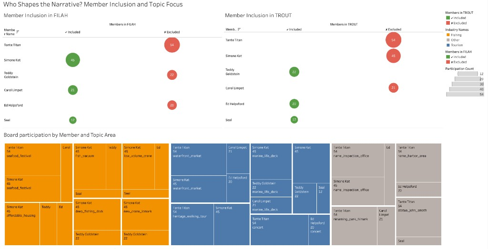
Member Inclusion in FILAH
A bubble chart with members as rows and two columns: Included (green bubbles) and Excluded (red bubbles). Bubble size encodes participation count. Tante Titan (54 records), Teddy Goldstein (22 records), and Ed Helpsford (20 records) appear as large red bubbles in the Excluded column, they were entirely omitted from FILAH’s dataset. The excluded members are precisely the three with the highest pro-fishing sentiment scores in the full dataset.
Member Inclusion in TROUT
The mirror-image bubble chart for TROUT. Here Tante Titan (54), Simone Kat (45), and Carol Limpet (21) appear as large red excluded bubbles. Teddy Goldstein (22), Ed Helpsford (20), and Seal (12) are included. The symmetry between the two charts: each group excluded precisely the members whose records would have moderated their claimed bias.
Board Participation by Member and Topic Area
A treemap segmented by industry colour (Fishing = orange, Tourism = blue, Other = grey), where each tile represents a member–topic pairing sized by participation count. The largest tiles are Tante Titan × seafood_festival / waterfront_market, and Simone Kat × fish_vacuum / heritage_walking_tour.
This represents the fairness in the amount of meetings mentioning either fishing or tourism based on the size of the treemap tiles.
What changed and why
The sentiment scores for individual members do not change between datasets. What changes is who is present and what topics are covered, and this shifts the overall picture dramatically.
FILAH excluded:
Teddy Goldstein (Fishing=0.85)
Ed Helpsford (Fishing=1.0)
Tante Titan (Fishing=0.75)
These three are precisely the strongest pro-fishing members. Their absence drove FILAH’s fishing average down to 0.209.
TROUT excluded:
Simone Kat (Tourism=0.91)
Carol Limpet (Tourism=0.68)
Tante Titan (Tourism=0.47)
These three are precisely the strongest pro-tourism members. Their absence drove TROUT’s tourism average down to 0.141.
The suppressed numbers
| Missing from FILAH | Missing from TROUT | |
|---|---|---|
| Fishing participation links | 28 | 32 |
| Tourism participation links | 30 | 47 |
| Other participation links | 38 | 41 |
Note: Industry classification (Fishing / Tourism / Other) is derived from topic names in the Tableau data model, not from a raw industry field in the source CSVs. The industry column in all three links files is null in the raw data. These figures reflect the topic-based industry classification applied consistently across all datasets in Tableau.
Verdict on TROUT: TROUT’s accusations are substantially weakened by the full dataset. The appearance of pro-fishing board bias in TROUT’s data is manufactured almost entirely by the suppression of Simone Kat (45 journalist records, 0 in TROUT), Carol Limpet (21 journalist records, 0 in TROUT), and Tante Titan (54 journalist records, 0 in TROUT). These three members account for the board’s most pro-tourism engagement. Removing them collapses TROUT’s tourism average to 0.141. In the full journalist dataset, tourism sentiment rises to 0.549, nearly four times higher. The accusation is not strengthened or unchanged; it is directly contradicted by the evidence TROUT chose not to show.
Verdict on FILAH: Ed Helpsford’s exclusion from FILAH is analytically significant. He contributes 20 participant records in the full journalist dataset, none of which appear in FILAH’s submission. His fishing sentiment in the full dataset is the highest of any board member, and removing him directly lowers the average fishing sentiment in FILAH’s dataset, which is precisely what their narrative required. TROUT, by contrast, included all 20 of his records, surfacing exactly the evidence that served their case.
Evaluating activist claims against full evidence
Figure Q3.2 — Evaluating Activist Claims Against Full Evidence and Member-Level Sentiment Slopegraph, claimed-vs-reality bullet chart, and swing-witness scatterplot comparing each group’s framing to the full journalist record.
If the interactive embed doesn’t load, open it directly on Tableau Public: Evaluating Activist Claims (Tableau Public).
View static screenshots (fallback)
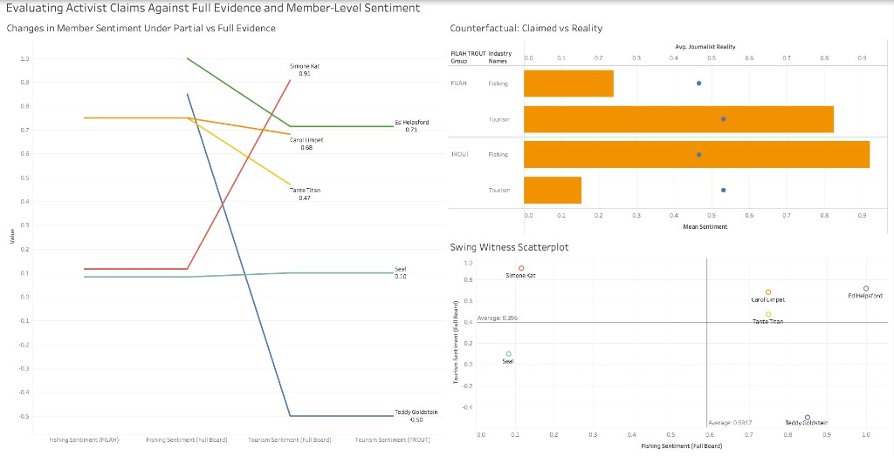
This dashboard directly confronts the gap between what each group claimed and what the full record shows, using three charts that together move from individual trajectories to group-level overstatement to a spatial summary of who was useful to whom.
Changes in Member Sentiment Under Partial vs Full Evidence
A slopegraph tracing each board member’s sentiment value across four vantage points: Fishing Sentiment (FILAH), Fishing Sentiment (Full Board), Tourism Sentiment (Full Board), and Tourism Sentiment (TROUT).
The most obvious omission is Teddy Goldstein: he is absent from FILAH, then appears as strongly pro-fishing (~0.85) in the full board view, and ends at −0.50 for tourism under TROUT, the only negative endpoint. Simone Kat runs in the opposite direction, ending at 0.91 for tourism in the full board view — a value TROUT suppressed by excluding her.
Counterfactual: Claimed vs Reality
A bullet graph with four rows, FILAH × Fishing, FILAH × Tourism, TROUT × Fishing, TROUT × Tourism: where each row shows the group’s claimed sentiment and the full journalist reality. TROUT’s Tourism understatement (~−0.41) is the largest single distortion.
Swing Witness Scatterplot
A scatterplot of Fishing Sentiment (Full Board) vs Tourism Sentiment (Full Board) with reference lines at Fishing = 0.5917 and Tourism = 0.396. Tante Titan sits near the middle (balanced and high volume), Simone Kat is the tourism outlier, and Teddy Goldstein is the only member with negative tourism sentiment.
Q4: How does an individual member’s story change across datasets?
The interactive dashboard below makes this visible: members absent from a dataset simply do not appear in that panel. The missing rows are the story.
Figure Q4.1: Breaking Down Member Sentiment Use the member and dataset filters to compare industry-level bars and topic-level dots across FILAH, TROUT, and the full journalist record.
If the interactive embed doesn’t load, open it directly on Tableau Public: Breaking Down Member Sentiment (Tableau Public).
View static screenshots
Member views
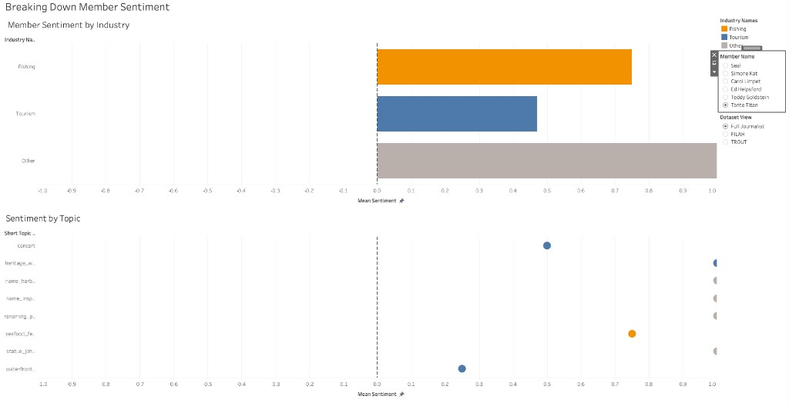
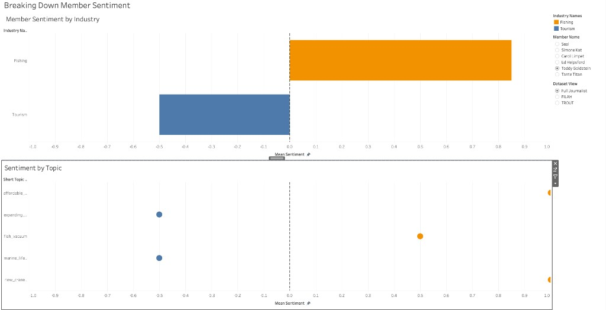
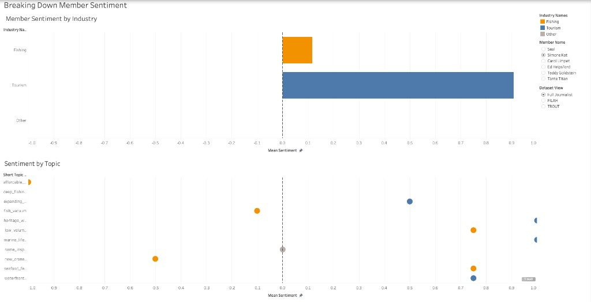
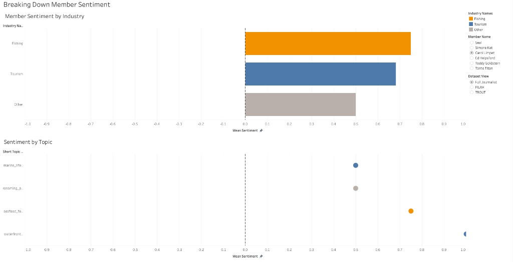
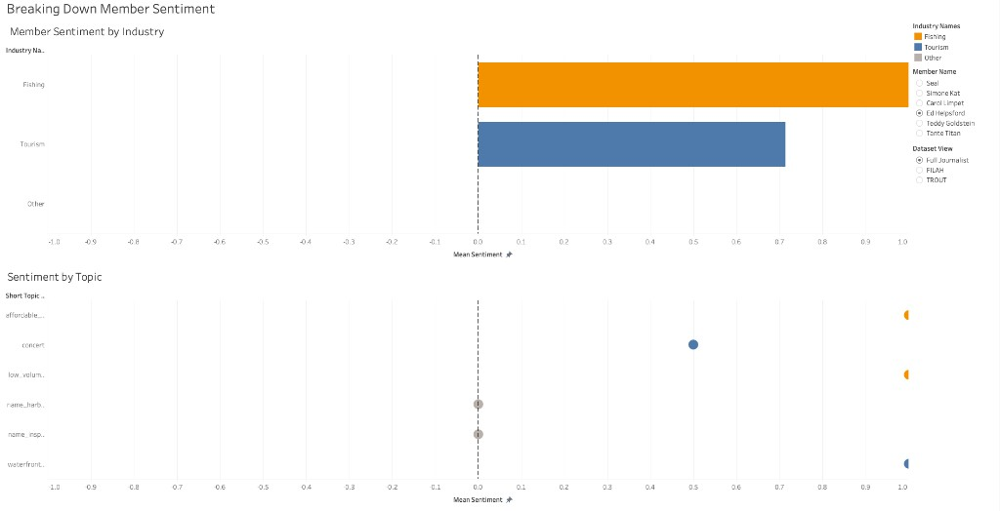
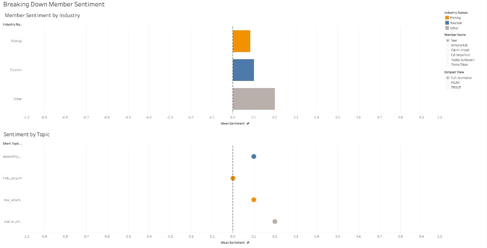
Breaking Down Member Sentiment
This dashboard is designed to explore any individual member’s profile interactively — selecting a name and toggling the dataset view to see how the story changes. The two views work together: the upper view gives the industry-level summary, and the lower view gives the topic-level detail.
Member Sentiment by Industry
A horizontal bar chart showing the selected member’s mean sentiment broken down by industry (Fishing / Tourism / Other), plotted on a −1 to +1 scale with a dashed zero-line as reference. It responds to two filter controls: Member Name and Dataset View (Full Journalist / FILAH / TROUT).
When Tante Titan is selected under Full Journalist view, the bars show a broadly positive, balanced profile. Switching Dataset View to FILAH or TROUT collapses the chart to empty because neither group recorded any of her 54 links. The absence of bars is itself the evidence.
Sentiment by Topic
A dot plot beneath the industry view that breaks the same selection down to individual topic level. Each row is a topic; each dot is the member’s mean sentiment on that topic, coloured by industry. Switching from Full Journalist to FILAH or TROUT makes missing participation visually explicit: dots (and sometimes entire topic rows) disappear because the underlying records were suppressed.
Network Graph: Board Member Connections
This interactive network maps each board member’s participation across discussions and travel records. Node size reflects total connection count. Edge colour reflects which dataset the connection comes from — FILAH edges, TROUT edges, journalist-only edges, and edges shared by both groups are each coloured distinctly.
When exploring the network, three observations are analytically important. First, switch to the FILAH-only filter: Tante Titan’s node disappears entirely, despite her being the most connected member in the full journalist view. Second, apply the TROUT-only filter: Simone Kat and Carol Limpet’s nodes vanish completely, and Tante Titan also disappears. Third, in the full journalist view, Teddy Goldstein appears as a moderately connected member rather than a dominant hub — which contextualises how misleading TROUT’s partial framing of him is. The missing nodes are not a display artefact. They are the story.
Drag nodes to rearrange. Scroll to zoom. Click board members (red) to highlight connections. Click background to reset.
▶ View static Gephi exports
Tante Titan — 54 records, absent from both FILAH and TROUT

Teddy Goldstein — Only in TROUT; hidden by FILAH entirely
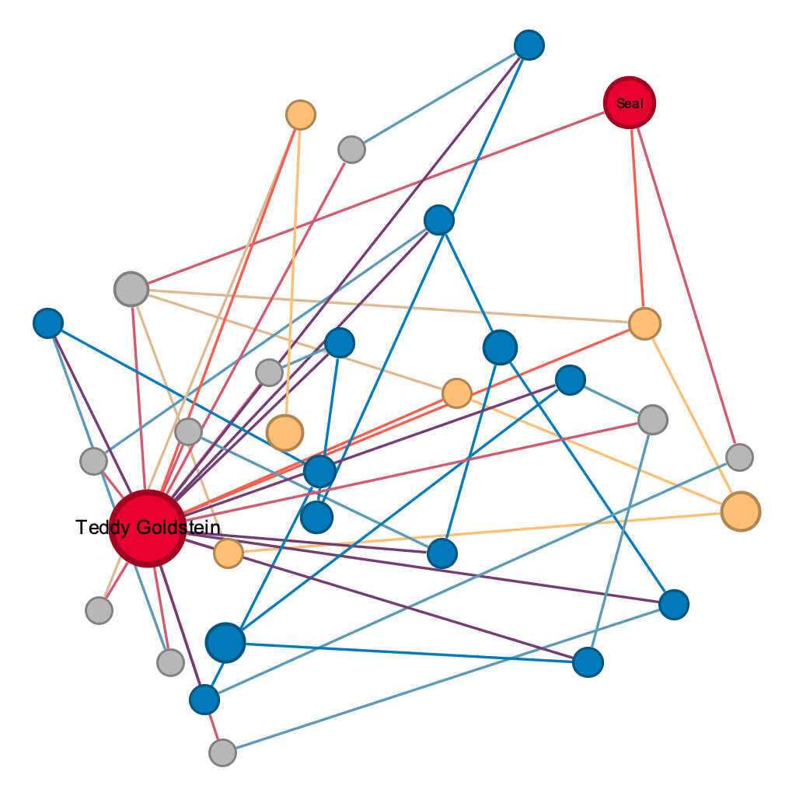
Full journalist network — all 6 board members, all topics
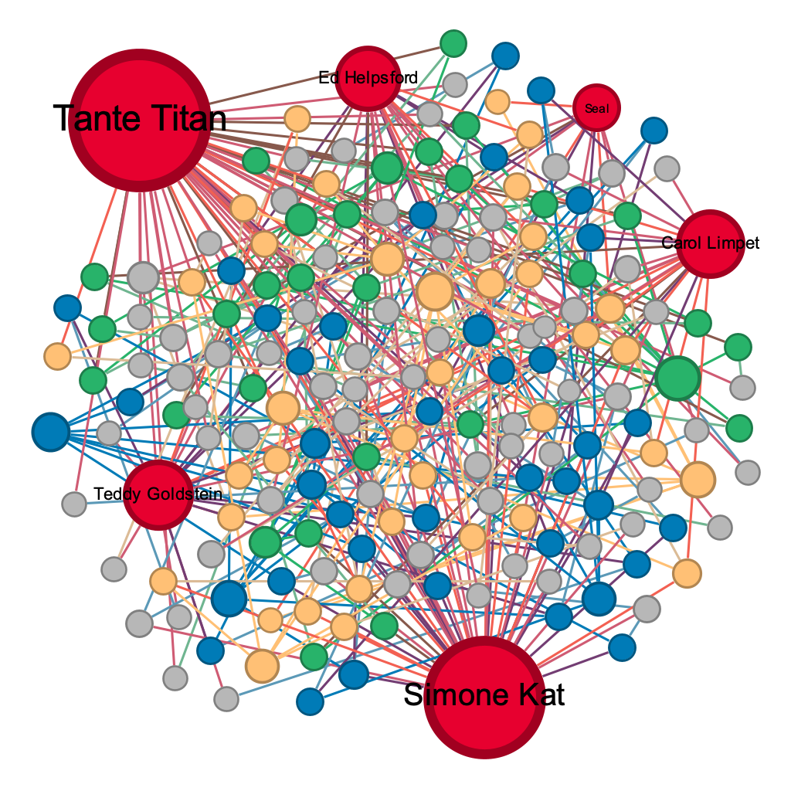
The static Gephi exports (Tante Titan, Teddy Goldstein, full network) are embedded below the interactive graph.
Full Journalist Network
This force-directed export shows the complete journalist evidence. Red nodes are board members; other nodes represent linked discussions/topics/travel entities. Node size is scaled by connection count (degree), and edge colours reflect dataset provenance (FILAH / TROUT / Journalist Only / FILAH+TROUT), matching the legend in the interactive network. Analytically, the dense interweaving across topic colours suggests the board is not structurally polarized into clean “fishing” vs “tourism” clusters; the strongest distortions arise from selective inclusion/exclusion of members and topics, not from isolated sub-networks.
Tante Titan Ego Network
This ego-network is centered on Tante Titan (largest red node), retaining the same node/edge encoding as the full export. Her connections span multiple industries and contexts rather than concentrating in a single partisan cluster. Because she is both high-volume and broadly connected, including her would pull both groups’ partial averages back toward the journalist baseline—explaining why both FILAH and TROUT omit her entirely.
Selecting Tante Titan and switching to FILAH or TROUT view produces empty charts. Switching to Full Journalist reveals 54 records with a balanced, positive profile. The contrast between empty panels and populated full-dataset panels is the clearest single illustration of deliberate suppression in the entire project.
Teddy Goldstein Ego Network
This ego-network is centered on Teddy Goldstein. The subgraph is smaller than Tante Titan’s, reflecting fewer recorded participation links, but it helps explain why Teddy is narratively powerful: many links run through tourism-related nodes even though his tourism sentiment is negative (−0.50 in the sentiment analysis). TROUT foregrounds him because he supports their claim; FILAH excludes him for the same reason.
Teddy appears only in TROUT’s dataset. Switching the Dataset View reveals:
- In TROUT’s view: Teddy is visible. Fishing=0.85, Tourism=−0.50. He looks like a fishing partisan and provides strong apparent support for TROUT’s accusation.
- In FILAH’s view: Teddy does not exist. FILAH recorded none of his 22 participation records.
- In Full Journalist: Same values as TROUT (0.85 / −0.50): the full dataset does not add new Teddy records, it adds other members who counterbalance him.
TROUT showed Teddy because his profile fit their narrative. FILAH hid him because his pro-fishing sentiment would have undermined their claim.
The Gephi export above shows why he is so narratively useful: his ego network is smaller than high-volume members like Tante Titan, but it contains many tourism-linked connections alongside his negative tourism sentiment.
Key evidence missing from TROUT that changed Teddy Goldstein’s story
In the full journalist dataset, Teddy Goldstein’s profile looks like strong evidence of pro-fishing bias, and TROUT included all 22 of his participant records precisely because his numbers support their narrative. What TROUT omitted was not Teddy’s records, but the records of everyone who counterbalances him.
The key missing evidence from TROUT consists of three things. First, the complete exclusion of Simone Kat’s 45 participant records. Her tourism sentiment is the highest of any board member, and TROUT included none of her records. Second, the complete exclusion of Carol Limpet’s 21 participant records, another strongly tourism-positive member erased entirely. Third, the complete exclusion of Tante Titan’s 54 participant records, which show broadly positive engagement with both industries and dilute any appearance of a pro-fishing lean.
Without these omissions, Teddy Goldstein remains a member with a distinctive individual profile, but he becomes one voice among many rather than the representative face of the board. The board-level tourism sentiment rises from TROUT’s 0.141 to the journalist’s 0.549 once the suppressed evidence is restored. Teddy did not change between datasets. His values are identical in TROUT’s view and the full journalist view. What changed is the context around him.
Ed Helpsford: the quietly erased fishing supporter
Ed Helpsford is a clean case of asymmetric suppression. FILAH excluded all 20 of his journalist participation records; TROUT included every one of them. His strong pro-fishing profile made him a liability for FILAH’s narrative of anti-fishing board bias, and an asset for TROUT’s. The contrast between his complete absence in FILAH’s view and his full presence in TROUT’s is one of the clearest examples in the dataset of the same person being shown or hidden depending on whose story is being told.